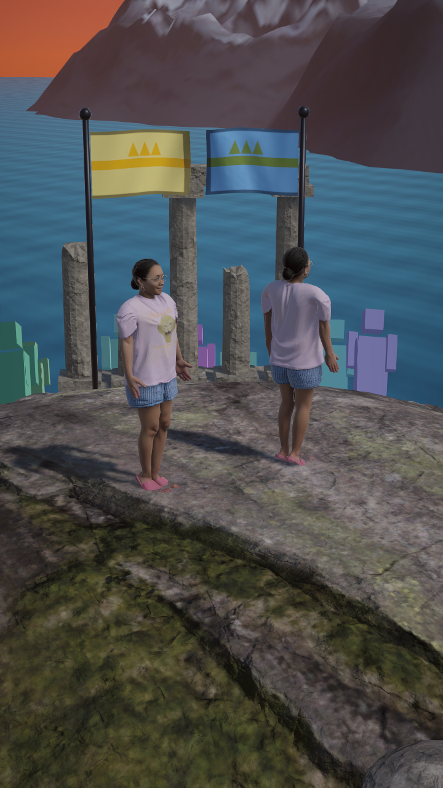
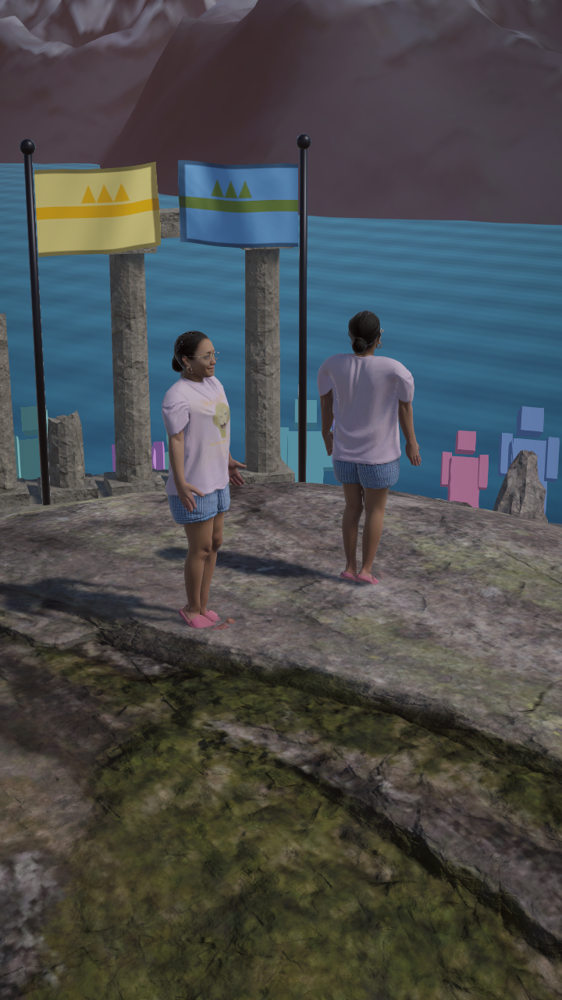
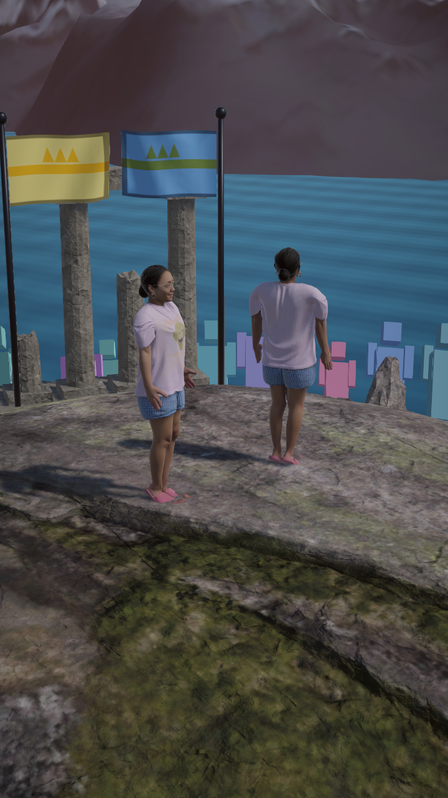
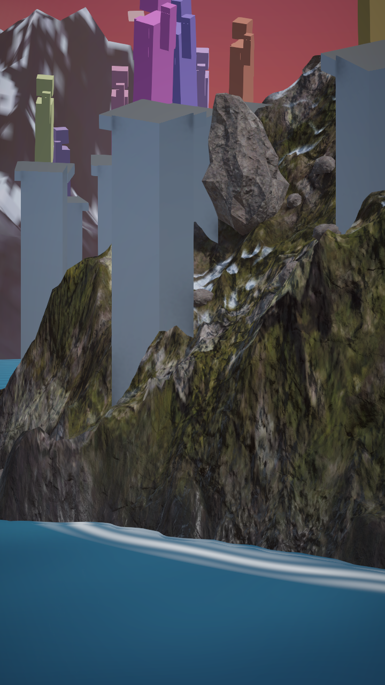
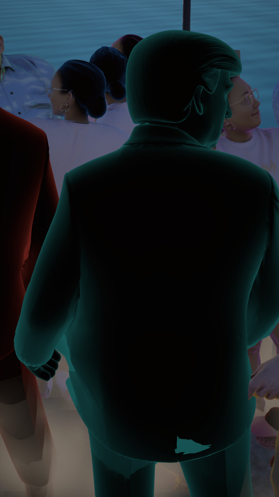
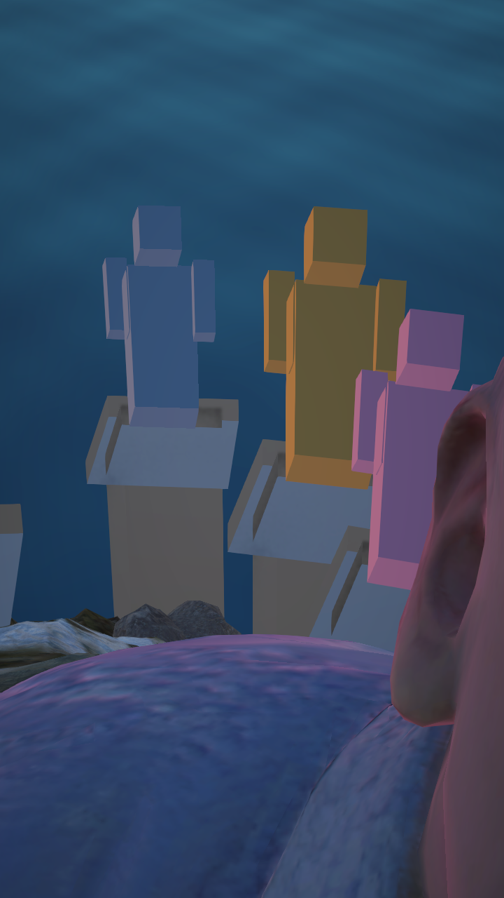

PoHillKing — All 20 Feature Upgrades Verification
2026-11-14 · Unity 6000.6.0f1 (DX11 + URP + InferenceEngine 2.6.1) · MuJoCo 3.15.0 · Python training/
Unity EditMode
62 / 62 Passed
0 failed · 4.21 s · includes
FeatureUpgradeTests + DX11 shader checksUnity PlayMode
11 / 11 Passed
0 failed · 457.30 s ·
FeaturePlayModeTests, HudLayoutTests, MatchFlowTests, StateFlowSoakTestsPython & AMP
5/5 AMP · 2/2 Budget
test_amp.py (incl. 100STYLE), test_train_budget.py, env.py victory & brawler checksCollision Audit
0 Zero/Rest/T-Pose
collision_audit.py --robots g1 kim trump grandpa brawler --no-render exit 0Visual Captures (Game.unity DX11 PlayMode)
Captured offscreen via Camera.main.Render() in FeaturePlayModeTests (720×1280 portrait); UIToolkit overlays verified separately across all 5 portrait resolutions (1080×1920 to 1080×2520) in HudLayoutTests and FeaturePlayModeTests.

SkyGradient.shader Sunset horizon, and GPU-instanced CrowdSpectator ring on perimeter ruins columns.

FlagBadge country badges, rivalry nemesis counters, career W/M/KO stats, and Wikipedia summary lines verified in layout checks).
PredictionBook winner pick, country flag badge, nemesis record, and ellipsized single-line Wikipedia bio verified without badge overlap.
PolicyBatcher running grouped dynamic-batch ONNX forward passes across shared body kinds with SpringBone clothing motion, eyes/blink shader state, and spectator crate throw.
PlayMode Suite Breakdown (Logs/playmode-pk.xml)
| Fixture | Test Case | Duration | Status |
|---|---|---|---|
FeaturePlayModeTests | FeaturesRuntimeBatchingHeatsCamerasAndScreenshots | 7.15 s | Passed |
HudLayoutTests | EveryScreenFitsEveryPhone (5 phones: 16:9 to 21:9) | 19.45 s | Passed |
HudLayoutTests | TopBarClearsCutouts | 1.74 s | Passed |
MatchFlowTests | CenteredSixteenPlayerStartKeepsMostFightersStandingForTwoSeconds | 3.41 s | Passed |
MatchFlowTests | CharacterVoiceMatrixHasProceduralFallbacks | 1.36 s | Passed |
MatchFlowTests | IntroLeadsIntoTheFirstRound | 16.26 s | Passed |
MatchFlowTests | MenuFightResultMenu (strict ConsoleGuard(allWarnings: true)) | 16.39 s | Passed |
MatchFlowTests | ObserveTenSixteenPlayerGames | 159.53 s | Passed |
MatchFlowTests | ReturningToTheMenuMidRoundIsClean | 3.21 s | Passed |
StateFlowSoakTests | MenuDuringReplayKeepsTheMenuPlacement | 20.75 s | Passed |
StateFlowSoakTests | RandomTapsNeverStrandTheGame | 207.96 s | Passed |
All 20 Features — Policy Impact & Verification Status
| # | Feature | Primary Implementation | Policy Impact | Verified By |
|---|---|---|---|---|
| 1 | Pick-your-winner predictions & streak score | SocialBooks.cs, HudView.Features.cs, MatchDirector.Features.cs | None | EditMode + PlayMode |
| 2 | Batched neural inference per brain/obsDim | PolicyBatcher.cs, PolicyRunner.cs | None (parity < 1e-4 vs single-worker) | EditMode + PlayMode |
| 3 | Rivalries, nemesis cards & career stats | SocialBooks.cs, ContactLedger.cs, HudView.Features.cs | None | EditMode + PlayMode |
| 4 | Haptics & gamepad rumble | Haptics.cs, GameSettings.cs | None | EditMode + PlayMode |
| 5 | Time-of-day & storm sky skins | AtmosphereController.cs, FX/SkyGradient.shader, GameSettings.cs | None | EditMode + DX11 PlayMode |
| 6 | Photo mode on replay pause | CameraExtras.cs, ShareBridge.cs, HudView.Features.cs | None | PlayMode + HUD layout |
| 7 | 4×4 Heats-and-Final bracket | MatchDirector.Features.cs (BuildHeatsSchedule, StartHeatsTournament) | None | EditMode + PlayMode |
| 8 | KO-of-the-match highlight & share bridge | ContactLedger.cs, ReplaySystem.cs, ShareBridge.cs, KothShare.jslib | None | EditMode + PlayMode |
| 9 | Fighter POV & PiP KO cam | CameraExtras.cs, HudView.Features.cs | None | DX11 PlayMode + 06_fight_pov.png |
| 10 | Footprints, sweat & wet hair rendering | MatchFx.cs, LifeSigns.cs, FX/Fighter.shader | None | DX11 PlayMode |
| 11 | Real eyes, blinking & eye darting | LifeSigns.cs, FX/Fighter.shader | None | DX11 PlayMode |
| 12 | Cloth / tie / hair spring physics | SpringBone.cs, LifeSigns.cs, FX/Fighter.shader | None | EditMode + DX11 PlayMode |
| 13 | Procedural crowd & cheering ruins | CrowdRing.cs, FX/CrowdSpectator.shader | None (zero PhysX colliders) | PhysXAudit + 01_menu_play.png |
| 14 | Live weather & tide sync (Open-Meteo) | LiveAtmosphere.cs, GameSettings.cs | None | EditMode JSON parser + HUD |
| 15 | Daily seeded match & Azure/local leaderboard | DailyChallenge.cs, MatchDirector.Features.cs, tools/daily-api/ | None | EditMode + PlayMode StartDailyMatch |
| 16 | Country flag badges & Wikipedia bio summary | AgentBioService.cs, HudWidgets.cs, HudView.Features.cs | None | EditMode + HudLayoutTests |
| 17 | Spectator box throw & unranked arena modifiers | MatchDirector.Features.cs, ProjectilePool.cs, HudView.Features.cs | Fun-only (blocked in statsRounds > 0) | EditMode + PlayMode |
| 18 | AMP 100STYLE personality clips & hill queue | mocap.py, fetch_mocap.py, queue_hill.py, test_amp.py | Opt-in training pipeline | test_amp.py (5/5 ok) |
| 19 | True physical victory R6 rung | training/koth/env.py (victory / victory_s=2.5) | New rung only (unchanged obs/act) | env.py cfg + test_train_budget.py |
| 20 | 4th fighter scaffold (brawler) | make_brawler.py, build_brawler.py, env.py, brawler.glb | Off Game.unity until gated | collision_audit.py + env.py |
Notes & Issues Resolved During Verification
- DX11 shader compilation fix (
Fighter.shader): Resolved DX11 loop unrolling error onScratches()by annotating[unroll] for (int i = 0; i < 3; i++)while preserving the 5-region cloth spring loop. - Procedural crowd instancing (
CrowdRing.cs+CrowdSpectator.shader): Fixed invisible crowd instances under URP by providing a GPU-instanced shader with_BaseColorper-instance property block and placing perimeter spectator columns outside the hill base (minRadius=5.6,ringY=-2.2). - 4×4 Heats fallback & Intro layout (
MatchDirector.Features.cs,HudView.Features.cs): Added roster fallback fromInGame()toRandomizePlayerSlots(true)/Available()when fewer than 8 fighters are manually ticked; marked the single-line Wikipedia bio label withellipsisso live-fetched long summaries clip cleanly inside compact portrait phone screens (1080×1920). - POV camera framing (
CameraExtras.cs): Tuned eye anchor (headBase + up*0.14 + toTarget*0.30) to clear self-geometry and frame opponent engagement across hill slopes.